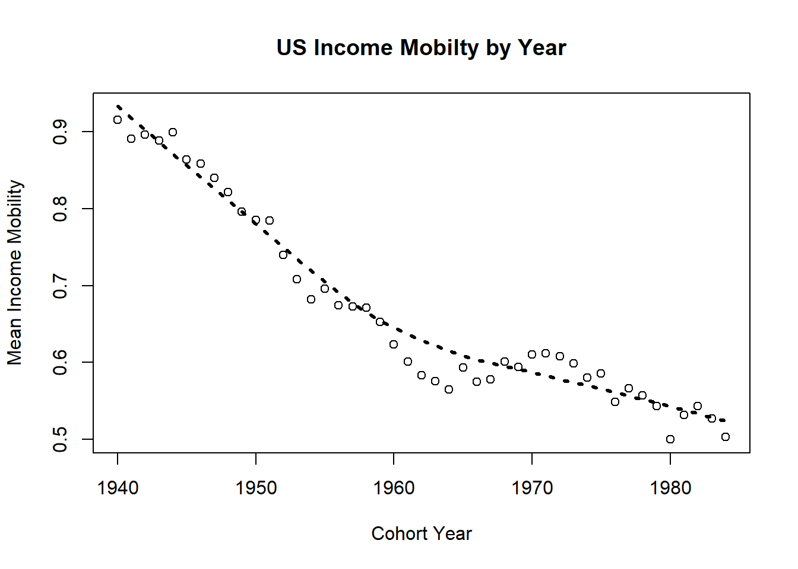
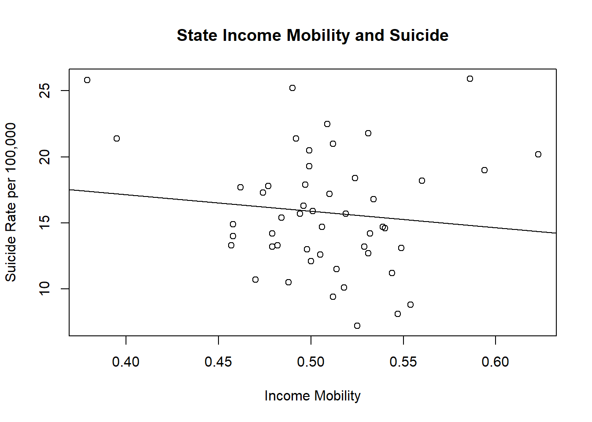

MBDS522 Data Project
Hamilton Noel
Income Mobility and Measures of Wellbeing
Introduction
Over the past 50 years in the the United States there has been a downward trend in intergenrational income mobility.1 In 1940 there was 95 percent likelihood that a child would make more than their parent. Yet, just 40 years later, a child born in 1980 only had about a 50 percent likelihood of outearning their parent (Chetty, Raj, et al., 2017).Clearly, the likelihood of a child making more than their parent has sharply declined in the past half century. See graph below.2 Yet, the question remains, are children aware of the decreased likelihood of outearning their parents? The importance of this questions is highlighted by Seligman’s theory of learned helplessness (1972). This theory predicts that people can learn that they are helpless to change their situation and as a result exhibit symptoms of depression. Applied to this situation, the learned helplessness theory predicts that if children learn that they are helpless in their quest to outearn their parents, they will be more likely to develop depressive symptoms.
In light of the above conversation, and with such a sharp decline in income mobility in the past half century, this paper seeks to better understand the relationship between income mobility and negative wellbeing indicators such as sucide and depression rates, and subjective happiness. Interestingly, Nikolaev and Burns (2014) find a connection between intergenerational mobility and subjective wellbeing. For their measures of mobility they analyze educational, social and income outcomes. They find the correlation between mobility and subjective wellbeing to be consistent throughout all measurements, but especially in regard to income mobility. If subjective wellbeing is a predictor of sucide, Moum (1996) finds a negative correlation between subjective wellbeing and sucide, then one would expect to find states with lower levels of income mobility to be correlated to higher rates of suicide. Additionally, as depression is used as a measure of wellbeing, it would be logical to find a negative correlation between income mobility and depression rates.
Opposite what might be expected, Clark et. Al (2009) find that co-workers that are paid less than their peers are more likely to have job satisfaction. They hypothesize that they project their future pay to be higher and are therefore happy. Projecting this onto society as a whole, those who see trends of immobility may be less satisfied as they do not see potential future earnings. Additionally, Chetty et al. (2014) predict that intergenerational mobility is about the same for those born in the 1970’s as those children entering the labor market in 2013 in the US. In extension of this finding, Chetty et al. (2014) suggest that increases in income inequality further highlight the importance of the birth lottery. It should be mentioned that income inequality combined with decreased likelihood of mobility fit nicely into the learned helplessness theory.
In summary, this paper’s purpose is to explore the connection between intergenerational income mobility and wellness outcomes such as sucide rates, subjective happiness, and depression rates. Due to the nature of the data, this analysis does not attempt to prove causation. Instead, this analysis strives to find correlational evidence for a connection between intergenerational mobility and wellbeing. As will be discussed later, these results are particularly informative for governmental and charitable organisations.
Data
The data I collected came from a variety of sources. To be continued…
For this paper intergenerational income mobility is defined as the likelihood that a child will outearn their parent by parent income percentile. This metric uses the child’s earnings percentile at age 30 compared to their parent’s earnings percentile. So, for example, to compute the mobility score of the 1980 cohort, one would use their 2010 earnings percentile and compare these to their parent’s earnings percentile.
Methodology
The research in this study uses both cross-sectional and longitudinal data to explore the relationship between declining rates of income mobility and measures of wellbeing. Longitudinal data is used to get a high level overview of trends in both income mobility and wellbeing in the United States. However, because there are so many confounding variables which result in changes in wellbeing, cross-section data is used to further investigate the relationship. With a greater ability to control for outside factors such as racial makeup and average income, cross-sectional analysis will compose the majority of the analysis. The cross-sectional data analysis will focus mainly on the United States but will use country to country comparisons for further evidence.
Results Longitudinal
Income Mobility Overview
Income mobility in the United States has been trending downwards since 1940. A simple regression shows that on average for every additional year, income mobility drops by 0.9 percentage points with a p-value below the .001 level.

Regressing Income Mobility by Year
| (1) | |
| cohortyear | -0.009 *** |
| (0.001) | |
| Intercept | 18.303 *** |
| (1.012) | |
| N | 45 |
| R2 | 0.876 |
| logLik | 76.790 |
| AIC | -147.580 |
| *** p < 0.001; ** p < 0.01; * p < 0.05. | |
Suicide Overview
In the United States suicide does not have a linear trend. A non-linear trend is expected as many factors contribute to suicide. These include things such as genetics, environment, weather, and cultural influences. Suicide in the United States decreased from the 1960’s to the year 2000. Since 2000 there has been a sharp increase in suicides.
At a quick glance this appears to be evidence that there is not a strong connection between suicide and income mobility. The problem with this assumption is that suicide is measured by year and not by cohort. This means that a suicide in a given year should be attributed to the individual’s cohort instead of to the year. Due to the difficulty of getting cohort level suicide information, this study can only use a rough estimates. While definitely not exact science, if one assigns every suicide to the cohort born 40 years earlier (middle aged individuals have the highest suicide rates), then the relationship between cohort year and suicide still declines to begin and has an incline at the end. A linear regression model is not attempted to estimate correlation becuase of it’s non-linearity.

Interestingly, when directly comparing cohort intergenerational income mobility levels in the United States to suicide levels by cohort, a strong correlation appears. As previously stated, suicide by cohort is only an estimate; however, though unclear at low income mobility levels, a strong positive correlation is found at higher levels of income mobility. Counter to intuition, this would suggest that higher levels of income mobility are correlated with higher suicide. The regression model suggests that a one hundred percent increase in Income Mobility is correlated with a 3.87 more suicides per 100,000.
Regressing Suicide on Income Mobility
| (1) | |
| Cohort Mobility | 3.869 *** |
| (0.994) | |
| Intercept | 9.681 *** |
| (0.706) | |
| N | 36 |
| R2 | 0.308 |
| logLik | -37.343 |
| AIC | 80.687 |
| *** p < 0.001; ** p < 0.01; * p < 0.05. | |
Happiness Overview
Happiness or life satisfaction has only started to be collected in the past few decades. As a result, it is difficult to compare longitudinal happiness trends in the United States. Currently, we only have data for 2005 to 2017. However, from the data we do have, happiness has been steadily declining in the United States. See graph below.
Similar to suicide rates, it is difficult to compare a given year’s reported life satisfaction to a specific cohort because life satisfaction measurements are composed of a variety of ages. Yet, if life satisfaction is compared to income mobility by assuming that happiness of a given year belong to the cohort of 40 years before, a positive correlation is found. This is consistent with what was expected. However, the correlation is not significant and will be further explored through cross-sectional data.
Regressing Happiness on Income Mobility
| (1) | |
| Income Mobility | 3.243 |
| (2.920) | |
| Intercept | 5.217 * |
| (1.718) | |
| N | 12 |
| R2 | 0.110 |
| logLik | 4.147 |
| AIC | -2.293 |
| *** p < 0.001; ** p < 0.01; * p < 0.05. | |
Results Cross-Sectional
To better understand the relationship between income mobility and wellbeing, this study uses cross-sectional data in the United States. This data exploits state by state variation in income mobility to see if there is correlation to state by state variation in wellbeing measurements. With more data and the ability to control for outside causal factors, this study relies more heavily on cross-sectional data. From a quick analysis of income mobility by state, it appears that income mobility is approximately normally distributed across states.
Suicide Cross-Sectional Results
Using multiple linear regressions with added controls, evidence suggests that income mobility is negatively correlated with suicide. This supports the learned helplessness theory as those who are exposed to a greater likelihood of outearning their parents are less likely to commite suicide. While not proving causation, this suggests that there is relationship between income mobility and suicide.
First Regression
The first regression is a simple linear regression of suicide rates on income mobility. This is consistent with the hypothesis that income mobility is correlated with lower levels of suicide. Interpreting this result suggests that a 100 percent increase increase in income mobility on average will decrease the suicide rate per 100,000 by 12.5 individuals.
Second Regression
The second regression attempts for differences in median income across states. The median income is reported in 10,000’s. Interestingly, when controlling for median income, the effect of income mobility on suicide increases. Interpreting these results suggests that a 100 percent increase in income mobility, holding income constant, on average leads to a 16 individual decrease in the suicide rate per 100,000.
Third Regression
The third regression attempts to account for differences in race across states. This is of importance because white males are the most likely to attempt suicide. Therefore, differences in racial makeup could be driving suicide rates instead of differences in income mobility. This regression uses the percentage of african americans and hispanics to compute a nonwhite variable for every state. When controlling for race income mobility becomes even more negatively correlated with suicide rates. This result suggests that holding median income and race constant, increasing income mobility by 100 percent on average is correlated with a 29.735 decrease in suicide rate per 100,000 individuals.
Regressing Suicide on Income Mobility with Controls
| (1) | (2) | (3) | |
| Mobility | -12.559 | -16.819 | -29.735 * |
| (15.132) | (14.813) | (13.287) | |
| Median Income | -0.000 * | -0.000 ** | |
| (0.000) | (0.000) | ||
| NonWhite | -17.481 *** | ||
| (4.361) | |||
| Intercept | 22.161 ** | 32.835 *** | 45.420 *** |
| (7.700) | (9.130) | (8.543) | |
| N | 50 | 50 | 50 |
| R2 | 0.014 | 0.094 | 0.328 |
| logLik | -145.291 | -143.193 | -135.703 |
| AIC | 296.582 | 294.385 | 281.407 |
| *** p < 0.001; ** p < 0.01; * p < 0.05. | |||

Happiness Cross-Sectional Results
Happiness in this report is measured through a combination of emotional, work, and community happiness reported in samples done throughout the United States. Obviously individual happiness is very subjective and confounded by a variety of factors. However, before diving deeper into wholistic happiness, I plotted happiness reports by their individual categories. Interestingly, as a combined happiness measurements are positively correlated with happiness but negatively correlated at each specific measurement.
First Regression
The first regression is a regression of happiness on income mobility. Consistent with what was expected, income mobility is positively correlated with happiness levels in a given state. On average a 100 percent increase in income mobility is correlated with a 40 point increase in average reported happiness.
Second & Third Regression
In the second and third regression the relationship between income mobility and happiness is explored while adding in controls for median income and race. Mobility becomes significant at the 5 percent level when adding in these controls. Yet, because of the many confounding factors such as culture, weather, etc., a direct causal relationship is not suspected. It is noteworthy that the sign stays consistent throughout these regressions pointing to income mobility being positively correlated to reported happiness.
| (1) | (2) | (3) | |
| Mobility | 39.974 | 56.895 * | 59.991 * |
| (28.488) | (23.296) | (24.200) | |
| Median Income | 0.001 *** | 0.001 *** | |
| (0.000) | (0.000) | ||
| NonWhite | 4.190 | ||
| (7.943) | |||
| Intercept | 31.750 * | -10.644 | -13.660 |
| (14.496) | (14.359) | (15.559) | |
| N | 50 | 50 | 50 |
| R2 | 0.039 | 0.384 | 0.387 |
| logLik | -176.924 | -165.831 | -165.681 |
| AIC | 359.849 | 339.663 | 341.361 |
| *** p < 0.001; ** p < 0.01; * p < 0.05. | |||
Conclusion and Extensions
Bibliography
Chetty, Raj, Nathaniel Hendren, Patrick Kline, Emmanuel Saez, and Nicholas Turner. 2014. “Is the United States Still a Land of Opportunity? Recent Trends in Intergenerational Mobility.” American Economic Review, 104 (5): 141-47.
Chetty, Raj, et al. “The fading American dream: Trends in absolute income mobility since 1940.” Science 356.6336 (2017): 398-406.
Clark, Andrew E., Nicolai Kristensen, and Niels WestergÃ¥rd-Nielsen. “Job satisfaction and co-worker wages: Status or signal?.” The Economic Journal 119.536 (2009): 430-447.
Moum, Torbjorn. “Subjective well-being as a short-and long-term predictor of suicide in the general population.” World Conference in Quality of Life, University of Northern British Columbia, Prince George, Canada. August. 1996.
Nikolaev, Boris, and Ainslee Burns. “Intergenerational mobility and subjective well-being-Evidence from the general social survey.” Journal of Behavioral and Experimental Economics53 (2014): 82-96.
Seligman, Martin EP. “Learned helplessness.” Annual review of medicine 23.1 (1972): 407-412.
For this paper intergenerational income mobility is defined as the likelihood that a child will outearn their parent by parent income percentile. This metric uses the child’s earnings percentile at age 30 compared to their parent’s earnings percentile. So, for example, to compute the mobility score of the 1980 cohort, one would use their 2010 earnings percentile and compare these to their parent’s earnings percentile.↩
Data used for this graph was taken from Opportunity Insights https://opportunityinsights.org/data/↩